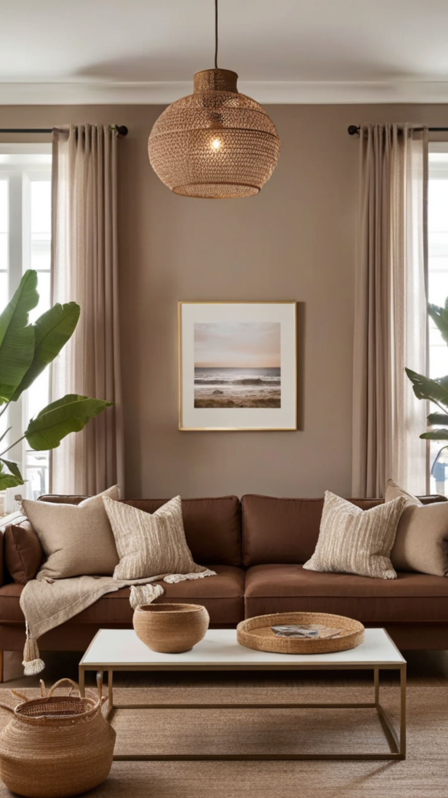
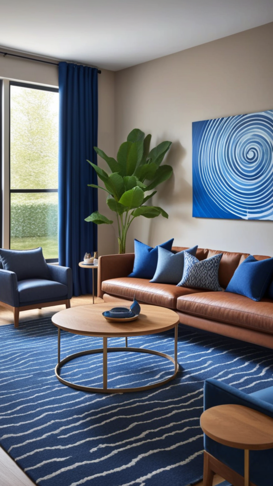
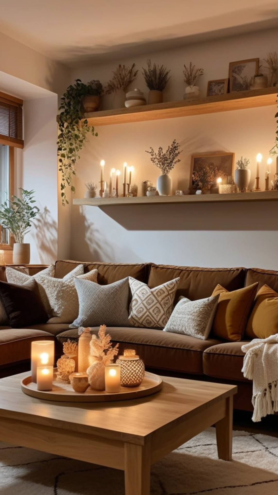
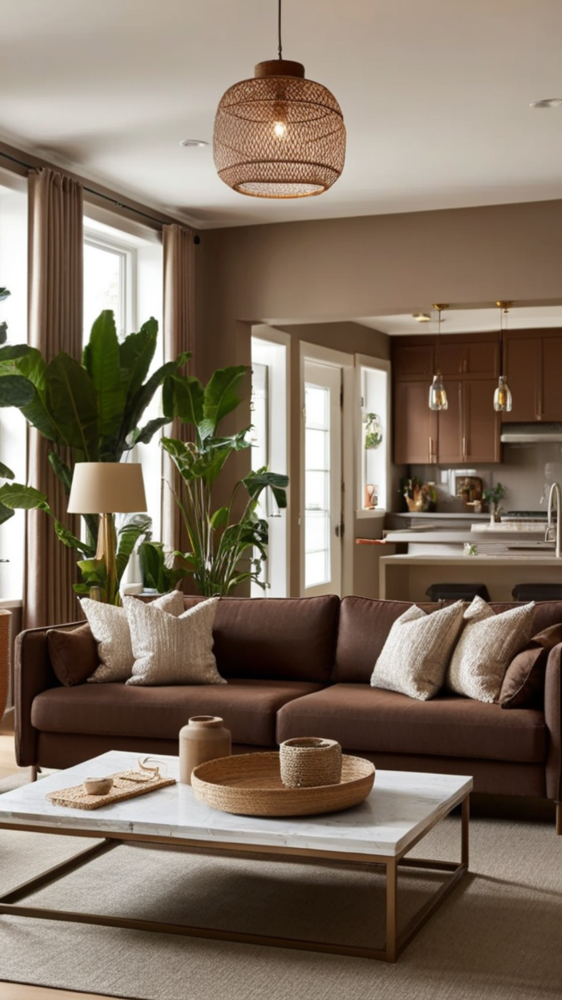

A brown couch is a timeless and versatile piece of furniture that can effortlessly anchor your living room decor. Whether you prefer a contemporary, rustic, or traditional aesthetic, incorporating a brown couch into your design can create warmth and sophistication. In this guide, we will explore innovative ways to style your living room with a brown couch, ensuring it becomes the focal point of your space.
When decorating around a brown couch, selecting a complementary color palette is key. Consider the following color combinations:
Neutral Tones: Shades of beige, ivory, and taupe create a soft, elegant look.
Earthy Hues: Incorporate deep greens, burnt oranges, and terracotta for a cozy, organic feel.
Bold Accents: Add pops of mustard yellow, teal, or navy blue to introduce vibrancy.
Adding a variety of textures will prevent the room from feeling monotonous. Consider:
Throw pillows and blankets in different fabrics like velvet, linen, or faux fur.
Rugs with geometric patterns or shaggy textures to enhance coziness.
Wood and metal accents in coffee tables, bookshelves, or decor pieces to introduce contrast.
The color of your walls will impact the overall ambiance of the room. Some ideal wall colors for a brown couch include:
Light Gray: Creates a modern and sophisticated backdrop.
Warm Beige: Enhances the natural warmth of brown.
Soft Blue or Green: Adds a refreshing balance to the space.
White: Keeps the room feeling open and airy.
Styling your living room with carefully selected decor items will enhance the beauty of your brown couch:
Artwork & Wall Decor: Large statement art, framed prints, or a gallery wall can add personality.
Indoor Plants: Greenery such as fiddle leaf figs, snake plants, or succulents bring life to the room.
Lighting: Floor lamps, table lamps, or pendant lights create ambiance and highlight the seating area.
Complement your brown couch with stylish and functional furniture:
Accent Chairs: Choose contrasting colors like cream, blue, or patterned upholstery for visual interest.
Coffee Tables: Wooden, glass, or metal options can enhance the style.
Side Tables & Ottomans: Functional pieces that add convenience and charm.
Switching out decor with the seasons keeps your living room fresh and inviting:
Spring & Summer: Lighter fabrics, pastel pillows, and fresh flowers.
Fall & Winter: Cozy blankets, warm-toned accents, and candles.
A brown couch is a fantastic investment for any living room due to its durability and design versatility. By carefully curating complementary colors, textures, and decor elements, you can create a space that is stylish, comfortable, and uniquely yours. With the right approach, your living room decor with a brown couch will exude warmth, charm, and sophistication.
   